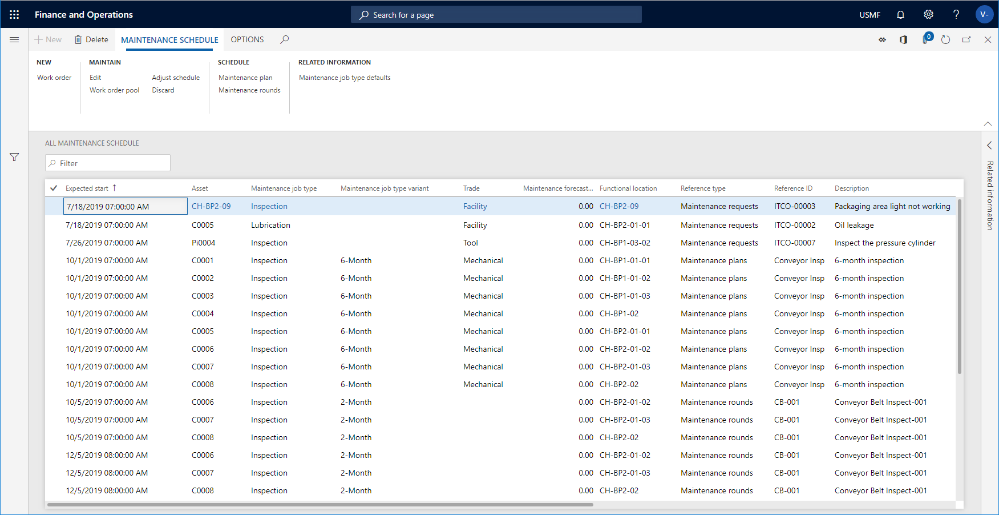

Wartungszeitplan
Important
Dynamics 365 for Finance and Operations hat sich zu speziell entwickelten Anwendungen entwickelt, mit denen Sie bestimmte Geschäftsfunktionen verwalten können. Weitere Informationen zu diesen Änderungen finden Sie im Dynamics 365-Lizenzierungshandbuch.
Der Wartungszeitplan enthält eine Liste aller zu erwartenden vorbeugenden Wartungspläne, Wartungsanfragen und durchzuführenden Wartungsdurchgängen. Einige Zeitplanpositionen wurden möglicherweise in Arbeitsaufträge umgewandelt.
Die vier Wartungszeitplanansichten unterscheiden sich leicht, je nachdem, welche Wartungszeitplanpositionen Sie sehen möchten.
| Menüoption | Beschreibung des Inhalts |
|---|---|
| Gesamter Wartungszeitplan | Alle Wartungszeitplanpositionen werden angezeigt. |
| Mein Anlagenzeitplan | Alle Wartungseinteilungen, die Anlagen enthalten, die auf funktionalen Standorten installiert sind, mit denen Sie als Arbeitskraft in Bezug stehen (eingerichtet in Wartungsarbeiter und Arbeitskraftgruppen), werden in dieser Liste angezeigt werden. |
| Offene Wartungszeitplanpositionen | Wartungszeitplanpositionen mit dem Status „Erstellt“ - d.h. sie wurden noch nicht in einen Arbeitsauftrag umgewandelt oder verworfen - werden in dieser Liste angezeigt. |
| Wartungszeitplanpools öffnen | Wartungszeitplanpositionen, die sich auf einen Arbeitsauftragspool beziehen, werden in dieser Liste angezeigt. |
Note
Wenn eine Wartungszeitplanposition in mehreren Arbeitsauftragspools enthalten ist (siehe Arbeitsauftragspools), wird für jeden Pool ein Datensatz in Wartungszeitplanpools öffnen angezeigt. Dies erfolgt, um Filtermöglichkeiten für Arbeitsauftragspools zu optimieren.
Um einen Wartungsplan zu öffnen:
Klicken Sie auf Anlagenverwaltung > Allgemein > Wartungszeitplan > Alle Wartungszeitpläne oder Wartungszeitplanpositionen öffnen oder Wartungszeitplanpools öffnen.
Um den Wartungszeitplan zu aktualisieren, klicken Sie Wartungsplan oder Wartungsdurchgang.
Sie können eine Wartungszeitplanposition bearbeiten, indem Sie sie auswählen und auf Bearbeiten klicken. So können Sie beispielsweise den Servicelevel oder die Arbeitskraft, die für den Auftrag zuständig sind, aktualisieren. Sie können nur Wartungsplanpositionen bearbeiten, die noch nicht mit einen Arbeitsauftrag verknüpft wurden.
Sie können eine Wartungsplanposition löschen, indem Sie sie auf der Listenseite auswählen und Löschen.
Sie können eine Wartungsplanposition verwerfen, indem Sie sie auf der Listenseite auswählen und Verwerfen. Diese Funktion ist z.B. sinnvoll, wenn eine Anlage einen 2.000 km Wartungsplan und einen 10.000 km Wartungsplan hat. Dann können Sie die aus dem 2.000 km Wartungsplan angelegte Position verwerfen, wenn sie mit 10.000 km, 20.000 km, 30.000 km usw. übereinstimmt. Wenn Sie eine Wartungszeitplanposition zu einem Wartungsplan verwerfen, wird diese Position nie wieder angezeigt, wenn dieser Wartungsplan terminiert wird.
Sie können unter Alle Wartungszeitpläne eine Reihe von Wartungszeitplanpositionen auswählen und auf Arbeitsauftragspool klicken, wenn Sie möchten, dass alle ausgewählten Positionen in den gleichen Arbeitsauftragspool aufgenommen werden.
Sie können eine Anzahl von Wartungszeitplanpositionen in Alle Wartungszeitpläne oder Wartungszeitplanpositionen öffnen oder Wartungszeitplanpools öffnen auswählen und auf Zeitplan anpassen klicken, wenn Sie die gleichen Anpassungen auf mehreren Positionen vornehmen möchten. Sie können die erwarteten Beginn- und Endtermine, Servicelevel und die verantwortliche Wartungsarbeitergruppe oder den verantwortlichen Wartungsmitarbeiter in Bezug auf die ausgewählten Wartungszeitplanpositionen ändern.
- Wenn eine Wartungszeitplanposition einem Arbeitsauftrag zugeordnet wurde, wird die Arbeitsauftragskennung im Feld Arbeitsauftrag angezeigt.
- In der Detailansicht Alle Anlagen > Inforegister Anlagenwartungspläne können Sie Wartungspläne für die Anlage auswählen. Wenn Sie später eine Wartungsplanposition löschen, die sich auf eine Anlage in Alle Anlagen bezieht, löschen Sie auch automatisch alle Wartungszeitplanpositionen mit dem Status „Erstellt“, die aufgrund dieses Wartungsplans angelegt wurden. Siehe auch Erstellen einer Anlage.
Die folgende Abbildung zeigt die Listenseite Alle Wartungszeitpläne an.
